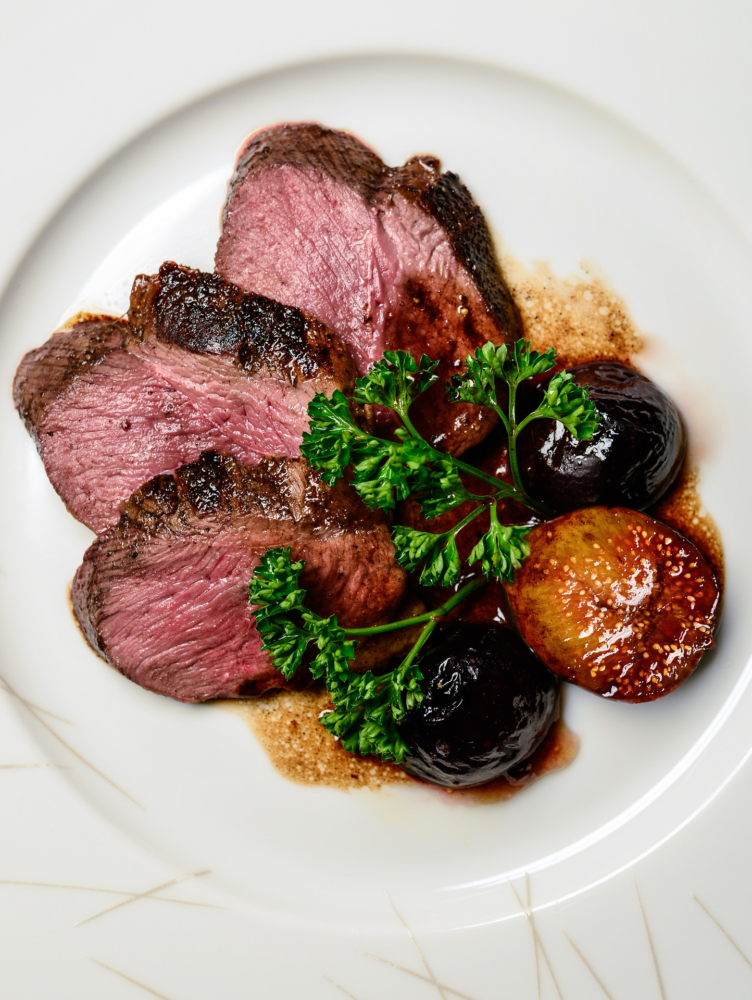

Calories in Meat > Duck breast calories
Duck breast calories
Duck meat is mostly popular in Asian cuisines. It has a stronger flavor than chicken and turkey and is closer in taste and texture to red meat. It is high in selenium, zinc, phosphorus, and B vitamins that help optimize energy production and enhance the immune system. While it’s rich in nutrients and has plenty of health benefits, duck has very high fat content and should be consumed in moderation.
Nutritional Values per 100g:
- Calories – 286.6 kcal
- Protein – 16g
- Fat – 23g
Duck breast calories are described in detail on the Calorie-Charts.info.
There are also: